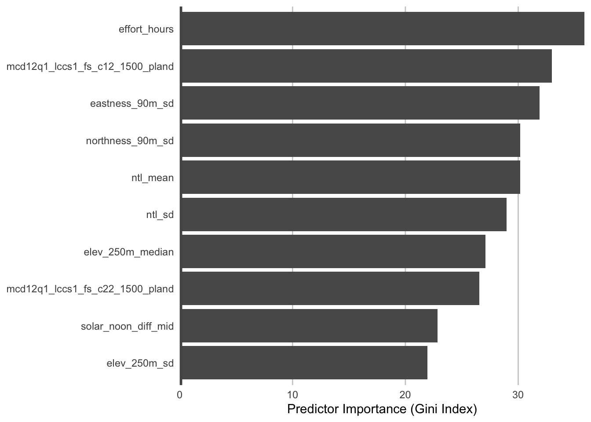
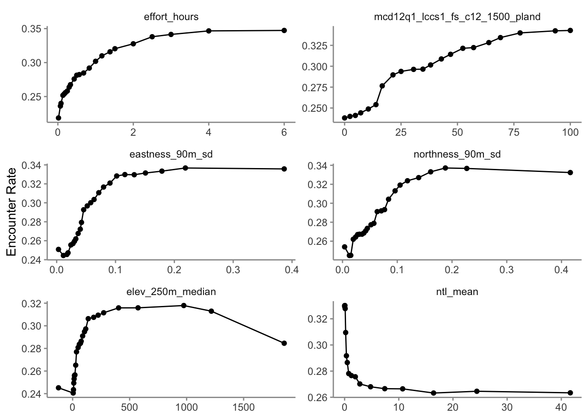
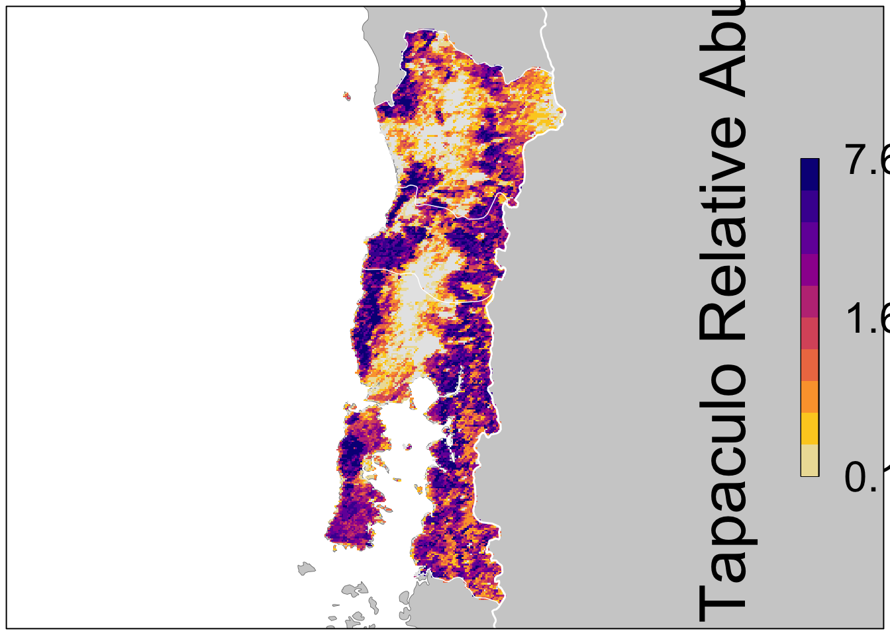

library(arrow)
library(auk)
library(dplyr)
library(ebirdst)
library(fields)
library(forcats)
library(ggplot2)
library(mccf1)
library(ranger)
library(scam)
library(sf)
library(terra)
# set seed for reproducibility
set.seed(1)
# detections
observations <- read_parquet("data/ebird_observations_chile_2021.parquet") %>%
filter(species_code == "chutap1") %>%
select(checklist_id, valid, obs_detected, obs_count)
# zero filled checklists
checklists <- read_parquet("data/ebird_checklists_chile_2021.parquet") %>%
left_join(observations, by = "checklist_id") %>%
filter(is.na(valid) | valid) %>%
mutate(
# checklist not in the observations dataset are non-detections
obs_detected = coalesce(obs_detected, 0L),
# non-detections correspond to a count of 0
obs_count = ifelse(obs_detected == 1L, obs_count, 0)
)2 Modeling Relative Abundance
In this lesson we’ll estimate encounter rate and relative abundance using eBird data. We define encounter rate as the probability of an eBirder encountering a species on a standard eBird checklist and relative abundance as the expected number of individuals detected on a standard eBird checklist.
The ecological metrics we’re ultimately interested in are probability that a species occurs at a site (i.e. the occupancy probability) and absolute abundance or density of individuals that occur at a site. It’s usually notpossible to estimate these quantities with eBird data because we typically can’t estimate absolute detectability. We can account for much of the variation in detectability by including effort variables in our model and choosing a region and season over which we expect detection effects to be constant. If best practices are followed, encounter rate will be proportional to occupancy and relative abundance proportional to absolute abundance.
The relative abundance model used by eBird Status and Trends, and presented here, is a two-step hurdle model. The first step estimates encounter rate and the second step estimates the expected count of individuals on eBird checklists where the species was detected. Then we multiply encounter rate by median count to produce an estimate of relative abundance. Both steps of the hurdle model use random forests.
As an example, let’s train a relative abundance model using observations of Chucao Tapaculo in January and February from the Chilean regions Araucanía, Los Ríos, and Los Lagos.
2.1 Data preparation
Let’s start by reading the eBird data into R and zero-filling it to produce detection/non-detection data for Chucao Tapaculo.
Next let’s subset the data to only observations from January and February, summer months during which we expect detectability and habitat associations to be stationary. To reduce variation in detectability, we’ll also subset the data to only those checklists less than 6 hours in duration and 10km in length, at speeds below 100km/h, and with 10 or fewer observers. Furthermore, we’ll only consider data from the past 15 years (2007-2021).
checklists <- checklists %>%
filter(
# last 10 years of data
year >= 2007,
# jan-feb
day_of_year >= 1, day_of_year <= 59,
# effort filters
effort_hours <= 6,
effort_distance_km <= 10,
effort_speed_kmph <= 100,
number_observers <= 10)For the final filtering step, we’ll use spatial boundaries included in the data package to subset observations to only those from Araucanía, Los Ríos, and Los Lagos.
study_region <- read_sf("data/gis-data.gpkg", layer = "ne_states") %>%
filter(state_code %in% c("CL-AR", "CL-LR", "CL-LL"))
# subset to regions of interest
in_region <- checklists %>%
select(checklist_id, latitude, longitude) %>%
st_as_sf(coords = c("longitude", "latitude"), crs = 4326) %>%
st_join(study_region, left = FALSE) %>%
st_drop_geometry()
checklists <- semi_join(checklists, in_region, by = "checklist_id")2.1.1 Test-train split
We’ll hold aside a portion of the observations from training to be used as an independent test set to assess the predictive performance of the model. Specifically, we’ll randomly split the data into 80% of observations for training and 20% for testing. To help with this, we create a new variable type that will indicate whether the observation falls in the test set or training set.
checklists$type <- ifelse(runif(nrow(checklists)) <= 0.8, "train", "test")
# confirm the proportion in each set is correct
table(checklists$type) / nrow(checklists)
#>
#> test train
#> 0.209 0.7912.1.2 Case controlled grid sampling
Following the method outlined in Section 1.4, we perform a round of case controlled grid sampling on the data to reduce spatial and temporal bias as well as class imbalance. We can use the sample_by argument to grid_sample_stratified() to independently sample from the train and test sets to remove bias from both.
checklists_sampled <- grid_sample_stratified(checklists,
obs_column = "obs_detected",
sample_by = "type")How did this impact the prevalence of detections compared to non-detections?
# original data
nrow(checklists)
#> [1] 6405
count(checklists, obs_detected) %>%
mutate(percent = n / sum(n))
#> # A tibble: 2 × 3
#> obs_detected n percent
#> <int> <int> <dbl>
#> 1 0 4630 0.723
#> 2 1 1775 0.277
# after sampling
nrow(checklists_sampled)
#> [1] 3407
count(checklists_sampled, obs_detected) %>%
mutate(percent = n / sum(n))
#> # A tibble: 2 × 3
#> obs_detected n percent
#> <int> <int> <dbl>
#> 1 0 2313 0.679
#> 2 1 1094 0.321So, the case controlled sampling decreased the overall number of checklists by a factor of 1.9, but increased the prevalence of detections. This increase in detections will help the random forests model distinguish where birds are being observed; however, this does affect the prevalence rate of the detections in the data. As a result, the estimated encounter rate based on these subsampled data will be larger than the true encounter rate. When examining the outputs from the models it will be important to recall that we altered the prevalence rate at this stage.
2.2 Hurdle model
For this two-step hurdle model, we’ll start by training an random forests model for encounter rate. Then we’ll subset the eBird checklist to only those where the species was detected or predicted to occur by the encounter rate model. We’ll use this subset of the data to train a second random forests model for expected count. Finally we’ll combine the results of the two steps together to produce estimates of relative abundance.
Let’s start by select by removing the 20% of checklists held aside for testing and selecting only those columns we’ll use as response or predictor variables in the models.
checklists_train <- checklists_sampled %>%
filter(type == "train") %>%
select(checklist_id,
obs_detected, obs_count,
is_stationary,
year, day_of_year, solar_noon_diff_mid,
effort_hours, effort_distance_km, effort_speed_kmph,
number_observers,
eastness_1km_median, eastness_1km_sd,
eastness_90m_median, eastness_90m_sd,
northness_1km_median, northness_1km_sd,
northness_90m_median, northness_90m_sd,
elev_250m_median, elev_250m_sd,
intertidal_fs_c1_1500_ed, intertidal_fs_c1_1500_pland,
ntl_mean, ntl_sd,
starts_with("astwbd"),
starts_with("gp_rtp"),
starts_with("mcd12q1"))2.2.1 Step 1: Encounter rate
For the first step of the hurdle model we’ll train a random forests model to estimate the probability of detection/non-detection of Chucao Tapaculo, a binary classification problem. Random forests are an excellent, general purpose machine learning method suitable for modeling encounter rate in a wide variety of scenarios.
Most classification algorithms aim to minimize the overall error rate, which results in poor predictive performance for rare classes. To address this issue, we’ll use a balanced random forests approach, a modification of the traditional random forest algorithm designed to handle imbalanced data. In this approach, each of the trees that makes up the random forest is generated using a random sample of the data chosen such that there are an equal number of detections (the rare class) and non-detections (the common class). To use this approach, we’ll need to calculate the proportion of detections in the dataset.
detection_freq <- mean(checklists_train$obs_detected)We’re now ready to train the encounter rate random forests model using the ranger package. Rather than writing out a complete model formula, we’ll use the ~ . notation to instruct the ranger() to use all variables as predictors. We just need to be cautious to remove both checklist_id and obs_count from the data frame. Since this is a classification problem, we also need to convert the response variable (obs_detected) to a factor variable.
train_er <- select(checklists_train, -checklist_id, -obs_count)
er_model <- ranger(formula = as.factor(obs_detected) ~ .,
data = train_er,
importance = "impurity",
# this ensures ranger predicts class probabilities
# not just the most likely class
probability = TRUE,
# implement a balanced random forests
replace = TRUE,
sample.fraction = c(detection_freq, detection_freq))Predicted probabilities from a random forests model do not always line up with the observed frequency of detection. We’ll address this mismatch using model calibration, which aligns the estimated probabilities to the observed frequencies. In particular, to calibrate our model results, we predict encounter rate for each checklist in the training set, then fit a binomial Generalized Additive Model (GAM) with the real observations as the response and the predicted encounter rate as the predictor variable.
# predicted encounter rate and observed detection
obs_pred <- tibble(obs = train_er$obs_detected,
pred = er_model$predictions[, 2])
# fit calibration model
calibration_model <- scam(obs ~ s(pred, k = 6, bs = "mpi"),
gamma = 2,
data = obs_pred)The random forest model produces continuous estimates of encounter rate from 0-1. However, for many applications, including selecting which observations are included in the next stage of the hurdle, we’ll need to reclassify this continuous probability to a binary presence/absence estimate. This reclassification is done by setting a threshold above which the species is predicted to be absent. We recommend selecting a threshold using the MCC-F1 curve, which performs well for class imbalanced data. The R package mccf1 implements this method.
# mcc and fscore calculation for various thresholds
mcc_f1 <- mccf1(response = obs_pred$obs, predictor = obs_pred$pred)
# identify best threshold
mcc_f1_summary <- summary(mcc_f1)
#> mccf1_metric best_threshold
#> 0.519 0.511
threshold <- mcc_f1_summary$best_threshold[1]2.2.2 Step 2: Count
For the second step of the hurdle model, we train a random forests model to estimate the expected count of individuals on eBird checklists where the species was detected or predicted to be detected by the encounter rate model. So, we’ll start by subsetting the data to just these checklists. In addition, we’ll remove any observations for which the observer reported that Chucao Tapaculo was present, but didn’t report a count of the number of individuals (coded as a count of “X” in the eBird database, but converted to NA in our dataset).
# attach the predicted encounter rate
train_count <- checklists_train
train_count$pred_er <- er_model$predictions[, 2]
# subset to only observed or predicted detections
train_count <- train_count %>%
filter(!is.na(obs_count),
obs_count > 0 | pred_er > threshold) %>%
select(-checklist_id, -obs_detected, -pred_er)We’ve found that including estimated encounter rate as a predictor in the count model improves predictive performance. So, with this in mind, we predict encounter rate for the training dataset and add it as an additional column.
predicted_er <- predict(er_model, data = train_count, type = "response")
predicted_er <- predicted_er$predictions[, 2]
train_count$predicted_er <- predicted_erFinally, we train a random forests model to estimate count. This is superficially very similar to the random forests model for encounter rate; however, for count we’re using a regression random forest while for encounter rate we used a balanced classification random forest.
count_model <- ranger(formula = obs_count ~ .,
data = train_count,
importance = "impurity",
replace = TRUE)2.2.3 Assessment
To assess the quality of the encounter rate, count, and relative abundance models, we’ll validate the their ability to predict the observed patterns of detection and counts using independent validation data (i.e. the 20% test data set). There are a range of predictive performance metrics (PPMs) that can be used to compare the predictions to the actual observations. We’ll start by estimating encounter rate, count, and relative abundance for the spatiotemporally grid sampled test dataset.
# get the test set held out from training
checklists_test <- filter(checklists_sampled, type == "test")
# estimate encounter rate for test data
pred_er <- predict(er_model, data = checklists_test, type = "response")
# extract probability of detection
pred_er <- pred_er$predictions[, 2]
# convert to binary using the threshold
pred_binary <- as.integer(pred_er > threshold)
# calibrate
pred_calibrated <- predict(calibration_model,
newdata = data.frame(pred = pred_er),
type = "response") %>%
as.numeric()
# constrain probabilities to 0-1
pred_calibrated <- pmin(pmax(pred_calibrated, 0), 1)
# add predicted encounter rate required for count estimates
checklists_test$predicted_er <- pred_er
# estimate count
pred_count <- predict(count_model, data = checklists_test, type = "response")
pred_count <- pred_count$predictions
# relative abundance is the product of encounter rate and count
pred_abundance <- pred_calibrated * pred_count
# combine all estimates together
obs_pred_test <- data.frame(
id = seq_along(pred_abundance),
# actual detection/non-detection
obs_detected = checklists_test$obs_detected,
obs_count = checklists_test$obs_count,
# model estimates
pred_binary = pred_binary,
pred_er = pred_calibrated,
pred_count = pred_count,
pred_abundance = pred_abundance
)First we’ll calculate a suite of PPMs for the encounter rate model.
# mean squared error (mse)
mse <- mean((obs_pred_test$obs_detected - obs_pred_test$pred_er)^2,
na.rm = TRUE)
# spearman correlation, based on in range observations only
spearman <- cor(obs_pred_test$pred_er[obs_pred_test$pred_binary > 0],
obs_pred_test$obs_detected[obs_pred_test$pred_binary > 0],
method = "spearman")
# precision-recall auc
em <- precrec::evalmod(scores = obs_pred_test$pred_binary,
labels = obs_pred_test$obs_detected)
pr_auc <- precrec::auc(em) %>%
filter(curvetypes == "PRC") %>%
pull(aucs)
# calculate metrics for binary prediction: kappa, sensitivity, specificity
pa_metrics <- obs_pred_test %>%
select(id, obs_detected, pred_binary) %>%
PresenceAbsence::presence.absence.accuracy(na.rm = TRUE, st.dev = FALSE)
# mcc and f1
mcc_f1 <- calculate_mcc_f1(obs_pred_test$obs_detected,
obs_pred_test$pred_binary)
# combine metrics together
ppms <- tibble(
mse = mse,
spearman = spearman,
sensitivity = pa_metrics$sensitivity,
specificity = pa_metrics$specificity,
kappa = pa_metrics$Kappa,
pr_auc = pr_auc,
mcc = mcc_f1$mcc,
f1 = mcc_f1$f1
)
knitr::kable(ppms, digits = 3)| mse | spearman | sensitivity | specificity | kappa | pr_auc | mcc | f1 |
|---|---|---|---|---|---|---|---|
| 0.129 | 0.401 | 0.7 | 0.845 | 0.536 | 0.588 | 0.537 | 0.681 |
The count and abundance predictive performance metrics are measures of within range performance, meaning we compare observed count vs. estimated count and abundance only for those checklists where the model predicts the species to occur.
# subset to only those checklists where detection is predicted
detections_test <- filter(obs_pred_test,
pred_binary > 0,
!is.na(obs_count))
# count metrics
count_spearman <- cor(detections_test$pred_count,
detections_test$obs_count,
method = "spearman")
log_count_pearson <- cor(log(detections_test$pred_count + 1),
log(detections_test$obs_count + 1),
method = "pearson")
# abundance metrics
abundance_spearman <- cor(detections_test$pred_abundance,
detections_test$obs_count,
method = "spearman")
log_abundance_pearson <- cor(log(detections_test$pred_abundance + 1),
log(detections_test$obs_count + 1),
method = "pearson")
# combine metrics together
ppms <- tibble(
count_spearman = count_spearman,
log_count_pearson = log_count_pearson,
abundance_spearman = abundance_spearman,
log_abundance_pearson = log_abundance_pearson
)
knitr::kable(ppms, digits = 3)| count_spearman | log_count_pearson | abundance_spearman | log_abundance_pearson |
|---|---|---|---|
| 0.523 | 0.589 | 0.529 | 0.588 |
Checkpoint
Let’s take a moment to consider these predictive performance metrics. How would the importance of different metrics change based on your intended application?
2.3 Habitat associations
From the random forest model, we can glean two important sources of information about the association between Chucao Tapaculo detection and features of their local environment. First, predictor importance is a measure of the predictive power of each variable used as a predictor in the model, and is calculated as a byproduct of fitting a random forests model. Second, partial dependence estimates the marginal effect of one predictor holding all other predictors constant.
2.3.1 Predictor importance
During the process of training a random forests model, some variables are removed at each node of the trees that make up the random forests. Predictor importance is based on the mean decrease in accuracy of the model when a given predictor is not used. It’s technically an average Gini index, but essentially larger values indicate that a predictor is more important to the model.
pi <- er_model$variable.importance
pi <- data.frame(predictor = names(pi), importance = unname(pi)) %>%
arrange(desc(importance))
# plot top 10 predictors
ggplot(head(pi, 10)) +
aes(x = fct_reorder(predictor, importance), y = importance) +
geom_col() +
geom_hline(yintercept = 0, linewidth = 2, colour = "#555555") +
scale_y_continuous(expand = c(0, 0)) +
coord_flip() +
labs(x = NULL,
y = "Predictor Importance (Gini Index)") +
theme_minimal() +
theme(panel.grid = element_blank(),
panel.grid.major.x = element_line(colour = "#cccccc", linewidth = 0.5))
The most important predictors of detection/non-detection are often effort variables. Indeed, that’s the case here: checklist duration, distance traveled, and time of day (solar_noon_diff) all appear in the top 5 predictors. This is not surprising: going out at the right time of day and expending more effort searching will lead to a higher probability of detecting Wood Thrush. Focusing on the habitat variables, both elevation variables have high importance, and the top habitat variables are from evergreen broadleaf forest and sparse forests. Note however, that high importance doesn’t tell us the direction of the relationship with detection, for that we’ll have to look at partial dependence plots.
2.3.2 Partial dependence
Partial dependence plots show the marginal effect of a given predictor on encounter rate averaged across the other predictors. These plots are generated by predicting encounter rate at a regular sequence of points across the full range of values of a given predictor. At each predictor value, predictions of encounter rate are made for a random subsample of the training dataset with the focal predictor fixed, but all other predictors left as is. The encounter rate predictions are then averaged across all the checklists in the training dataset giving an estimate of the average encounter rate at a specific value of the focal predictor. This is a cumbersome process, but we provide a function below that does all the hard work for you! This function takes the following arguments:
predictor: the name of the predictor to calculate partial dependence formodel: the encounter rate model objectdata: the original data used to train the modelx_res: the resolution of the grid over which to calculate the partial dependence, i.e. the number of points between the minimum and maximum values of the predictor to evaluate partial dependence atn: number of points to subsample from the training data
# function to calculate partial dependence for a single predictor
calculate_pd <- function(predictor, model, data,
x_res = 25, n = 1000) {
# create prediction grid using quantiles
x_grid <- quantile(data[[predictor]],
probs = seq(from = 0, to = 1, length = x_res),
na.rm = TRUE)
# remove duplicates
x_grid <- x_grid[!duplicated(signif(x_grid, 8))]
x_grid <- unname(unique(x_grid))
grid <- data.frame(predictor = predictor, x = x_grid)
names(grid) <- c("predictor", predictor)
# subsample training data
n <- min(n, nrow(data))
data <- data[sample(seq.int(nrow(data)), size = n, replace = FALSE), ]
# drop focal predictor from data
data <- data[names(data) != predictor]
grid <- merge(grid, data, all = TRUE)
# predict
p <- predict(model, data = grid)
# summarize
pd <- grid[, c("predictor", predictor)]
names(pd) <- c("predictor", "x")
pd$encounter_rate <- p$predictions[, 2]
pd <- dplyr::group_by(pd, predictor, x) %>%
dplyr::summarise(encounter_rate = mean(encounter_rate, na.rm = TRUE),
.groups = "drop")
return(pd)
}Now we’ll use this function to calculate partial dependence for the top 9 predictor variables.
# calculate partial dependence for each predictor
# map is used to iteratively apply calculate_pd to each predictor
pd <- NULL
for (predictor in head(pi$predictor)) {
pd <- calculate_pd(predictor, model = er_model, data = checklists_train) %>%
bind_rows(pd, .)
}
# calibrate predictions
pd$encounter_rate <- predict(calibration_model,
newdata = tibble(pred = pd$encounter_rate),
type = "response") %>%
as.numeric()
# plot
ggplot(pd) +
aes(x = x, y = encounter_rate) +
geom_line() +
geom_point() +
facet_wrap(~ as_factor(predictor), ncol = 2, scales = "free") +
labs(x = NULL, y = "Encounter Rate") +
theme_minimal() +
theme_minimal() +
theme(panel.grid = element_blank(),
axis.line = element_line(color = "grey60"),
axis.ticks = element_line(color = "grey60"))
Checkpoint
Consider the relationships shown in the partial dependence plots in light of your knowledge of the species. Do these relationships make sense.
2.4 Prediction
Using the prediction grid described in Section 1.3, we can estimate relative abundance over our entire study area. First we estimate encounter rate and count, then we multiply these together to get an estimate of relative abundance. Let’s read in the prediction grid and subset to just the region we’re focusing on.
pred_grid_all <- read_parquet("data/ebird_prediction-grid_chile_2021.parquet")
raster_template <- rast("data/prediction-grid_template.tif") %>%
# crop raster to study region
crop(st_transform(study_region, crs = crs(.)))
# subset to the three regions we're focusing on
in_region <- pred_grid_all %>%
select(srd_id, latitude, longitude) %>%
st_as_sf(coords = c("longitude", "latitude"), crs = 4326) %>%
st_join(study_region, left = FALSE) %>%
st_drop_geometry()
pred_grid <- semi_join(pred_grid_all, in_region, by = "srd_id")The prediction grid only includes values for the environmental variables, so to make predictions we’ll need to add effort variables to this prediction grid. We’ll make predictions for a standard eBird checklist: a 2 km, 1 hour traveling count at the peak time of day for detecting this species. Finally, we’ll make these predictions for Janurary 31, 2021, the middle of our January-February focal window for the latest year for which we have eBird data.
To find the time of day with the highest detection probability, we can look for the peak of the partial dependence plot.
# estimate a partial dependence plot for solar noon diff
pd_time <- calculate_pd("solar_noon_diff_mid",
model = er_model,
data = checklists_train) %>%
select(solar_noon_diff_mid = x, encounter_rate)
# partial dependence plot
ggplot(pd_time) +
aes(x = solar_noon_diff_mid, y = encounter_rate) +
geom_line() +
scale_x_continuous(breaks = seq(-12, 13, by = 3)) +
labs(x = "Difference from solar noon",
y = "Encounter",
title = "Partial dependence")
Based on the above plot, it appears that 6 hours before solar noon is the optimal time for observing Chucao Tapaculo. Let’s add all the effort variables to the prediction grid.
pred_grid_eff <- pred_grid %>%
mutate(year = 2021,
day_of_year = 31,
solar_noon_diff_mid = -6,
is_stationary = 0,
effort_hours = 1,
effort_distance_km = 2,
effort_speed_kmph = 2,
number_observers = 1)Now we can estimate calibrated encounter rate, count, and abundance for each point on the prediction grid. We also include a binary estimate of the range boundary.
# encounter rate estimate
pred_er <- predict(er_model, data = pred_grid_eff, type = "response")
pred_er <- pred_er$predictions[, 2]
# binary prediction
pred_binary <- as.integer(pred_er > threshold)
# apply calibration
pred_er_cal <- predict(calibration_model,
data.frame(pred = pred_er),
type = "response") %>%
as.numeric()
# add predicted encounter rate required for count estimates
pred_grid_eff$predicted_er <- pred_er
# count estimate
pred_count <- predict(count_model, data = pred_grid_eff, type = "response")
pred_count <- pred_count$predictions
# add estimates to prediction grid
predictions <- pred_grid_eff %>%
select(srd_id, latitude, longitude) %>%
bind_cols(in_range = pred_binary,
encounter_rate = pred_er_cal,
count = pred_count) %>%
mutate(encounter_rate = pmin(pmax(encounter_rate, 0), 1),
abundance = pred_er_cal * pred_count)Next, we convert these estimates to raster format using the raster template.
r_pred <- predictions %>%
# convert to spatial features
st_as_sf(coords = c("longitude", "latitude"), crs = 4326) %>%
st_transform(crs = crs(raster_template)) %>%
# rasterize
rasterize(raster_template,
field = c("in_range", "encounter_rate", "count", "abundance")) %>%
setNames(c("in_range", "encounter_rate", "count", "abundance"))
# trim global raster to study region
r_pred <- trim(r_pred)Prior to mapping these predictions, let’s load some contextual GIS data and project everything to a more suitable coordinate reference system.
# load and project gis data
map_proj <- "+proj=laea +lat_0=-40 +lon_0=-72"
ne_land <- read_sf("data/gis-data.gpkg", "ne_land") %>%
st_transform(crs = map_proj) %>%
st_geometry()
ne_country_lines <- read_sf("data/gis-data.gpkg", "ne_country_lines") %>%
st_transform(crs = map_proj) %>%
st_geometry()
ne_state_lines <- read_sf("data/gis-data.gpkg", "ne_state_lines") %>%
st_transform(crs = map_proj) %>%
st_geometry()
study_region_proj <- st_transform(study_region, crs = map_proj) %>%
st_geometry()
# project the raster data
r_pred_proj <- crop(r_pred, st_transform(study_region, crs(r_pred))) %>%
project(map_proj, method = "near")Finally we’ll produce a map of relative abundance. The values shown on this map are the expected number of Chucao Tapaculo seen by an average eBirder conducting a 2 hour, 1 km checklist on January 31, 2021 at the optimal time of day for detecting the species. Prior to mapping the relative abundance, we’ll multiple by the in_range layer, which will produce a map showing zero relative abundance where the model predicts that Chucao Tapaculo does not occur.
# in range abundance
r_plot <- r_pred_proj[["abundance"]] * r_pred_proj[["in_range"]]
par(mar = c(0.25, 0.25, 0.25, 0.25))
# set up plot area
plot(study_region_proj, col = NA, border = NA)
plot(ne_land, col = "#cfcfcf", border = "#888888", lwd = 0.5, add = TRUE)
# define quantile breaks, excluding zeros
brks <- ifel(r_plot > 0, r_plot, NA) %>%
global(fun = quantile,
probs = seq(0, 1, 0.1), na.rm = TRUE) %>%
as.numeric() %>%
unique()
# label the bottom, middle, and top value
lbls <- round(c(min(brks), median(brks), max(brks)), 2)
# ebird status and trends color palette
pal <- abundance_palette(length(brks) - 1)
plot(r_plot,
col = c("#e6e6e6", pal), breaks = c(0, brks),
maxpixels = ncell(r_plot),
legend = FALSE, axes = FALSE, bty = "n",
add = TRUE)
# borders
plot(ne_state_lines, col = "#ffffff", lwd = 0.75, add = TRUE)
plot(ne_country_lines, col = "#ffffff", lwd = 1.5, add = TRUE)
plot(study_region_proj, border = "#000000", col = NA, lwd = 1, add = TRUE)
box()
# legend
image.plot(zlim = c(0, 1), legend.only = TRUE,
col = pal, breaks = seq(0, 1, length.out = length(brks)),
smallplot = c(0.88, 0.90, 0.2, 0.8),
horizontal = FALSE,
axis.args = list(at = c(0, 0.5, 1), labels = lbls,
fg = "black", col.axis = "black",
cex.axis = 0.75, lwd.ticks = 0.5),
legend.args = list(text = "Chucao Tapaculo Relative Abundance",
side = 2, col = "black",
cex = 1, line = 0))